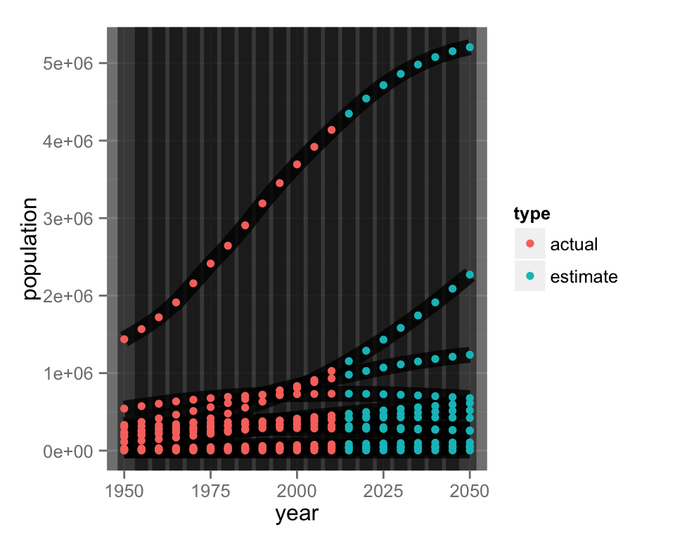
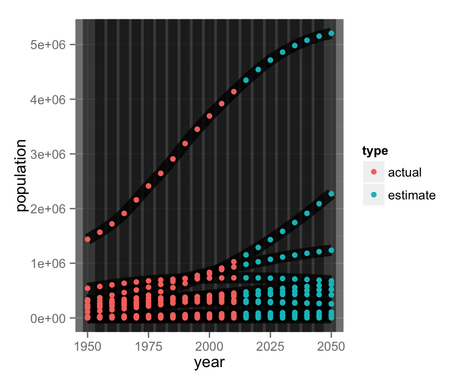
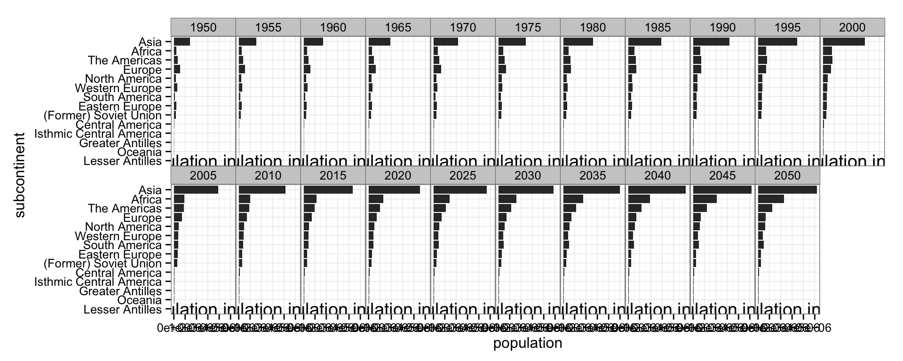
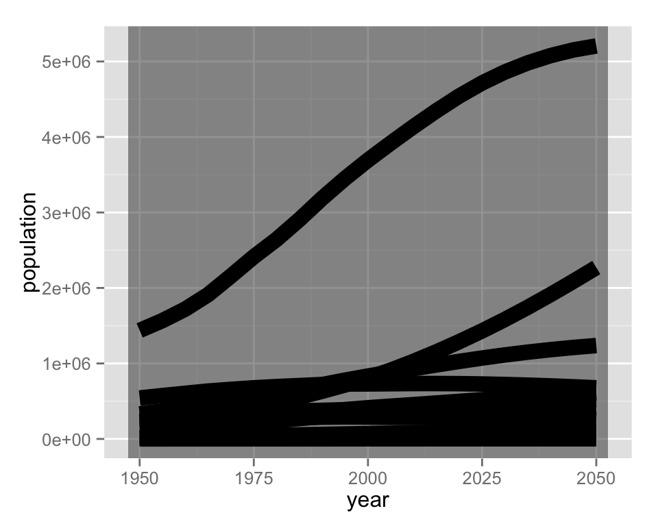
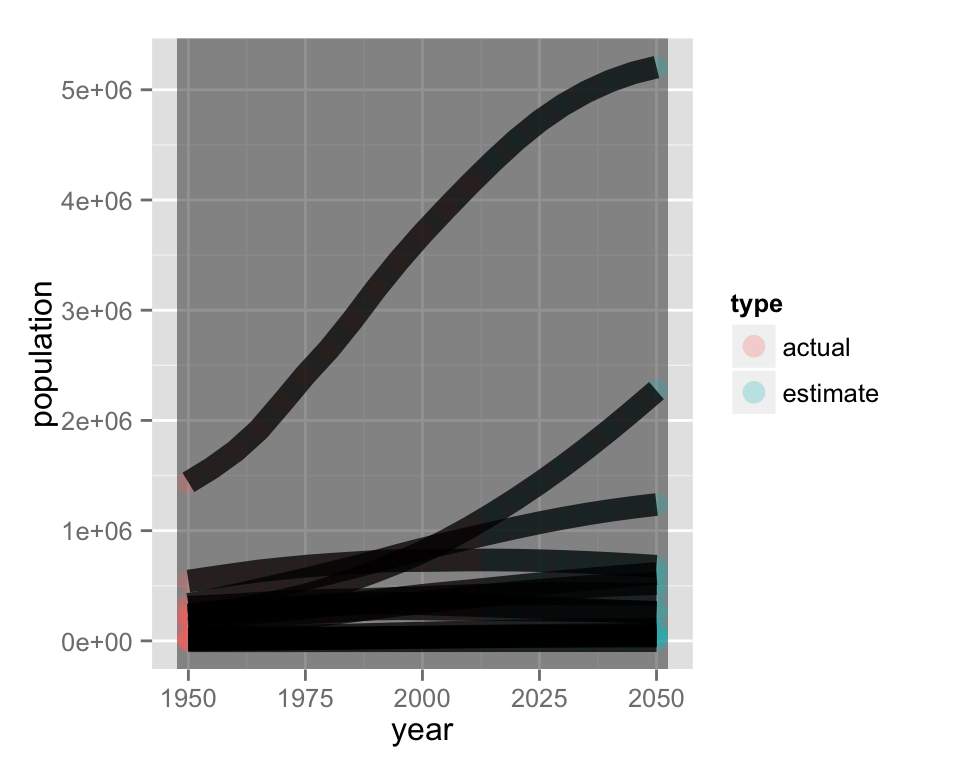
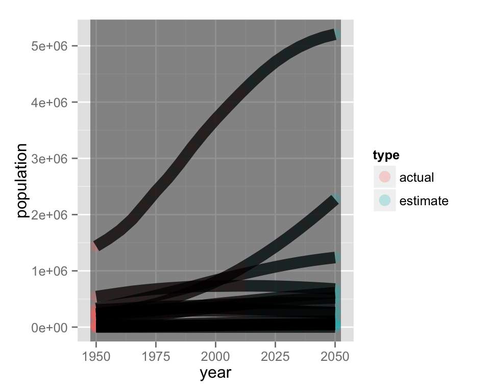
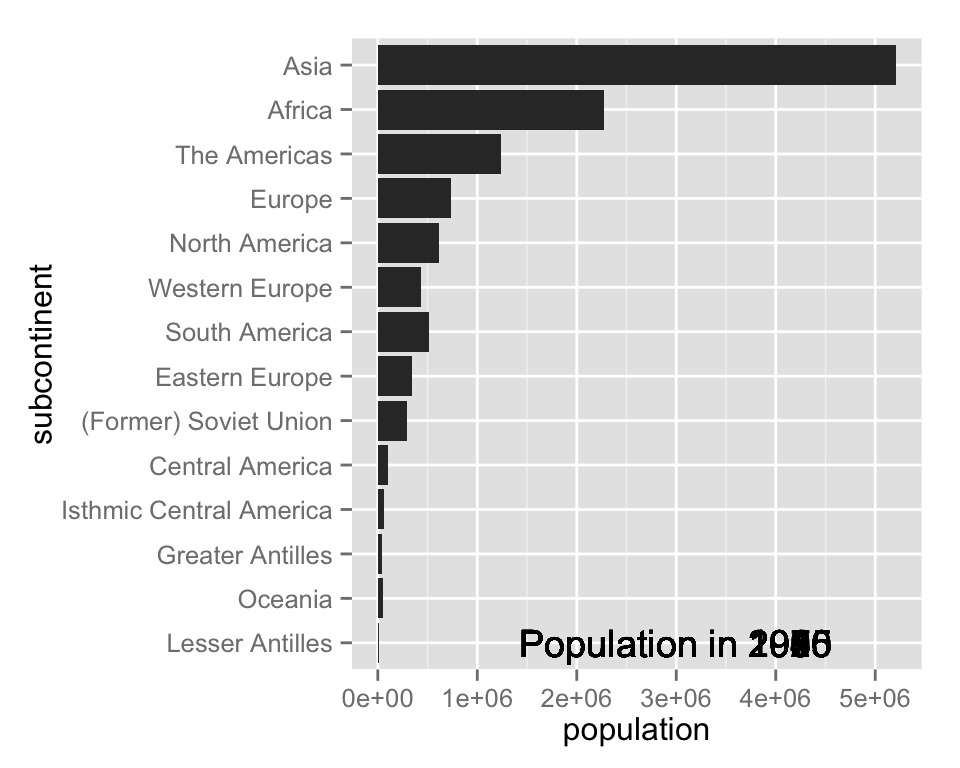
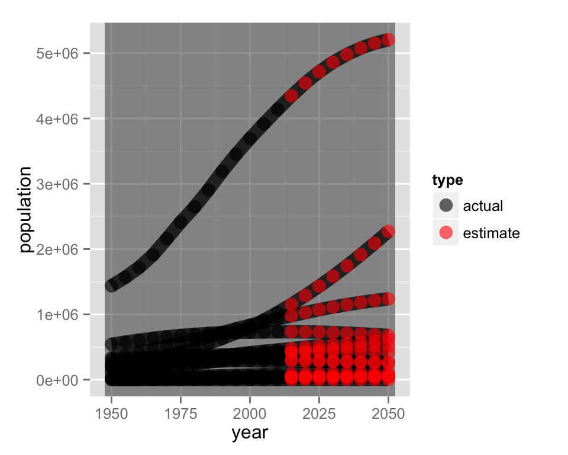
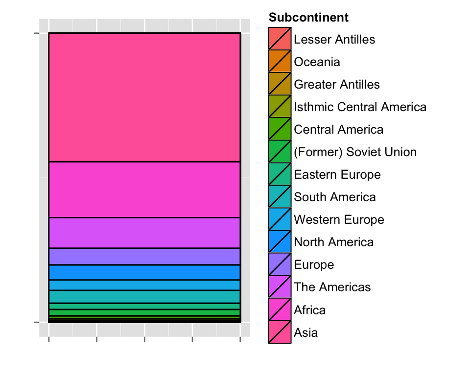

Visualizing the world’s population with animint
Carson Sievert
May 16, 2014
library(animint)
data(worldPop)
lvls <- ddply(worldPop, "subcontinent", summarise, mean(population))[,1]
worldPop$subcontinent <- factor(worldPop$subcontinent, levels = lvls)
years <- unique(worldPop["year"])
years <- transform(years, title = factor(sprintf("Population in %d", year)),
subcontinent = factor(levels(worldPop$subcontinent)[1]),
population = 3e6)
## this should be similar to the example on polychartjs.com
popPlots <-
list(bars = ggplot() +
geom_bar(aes(x = subcontinent, y = population, showSelected = year),
data = worldPop, stat = "identity", position = "identity") +
geom_text(aes(x = subcontinent, y = population,
label = title, showSelected = year),
data = years) + coord_flip(),
lines = ggplot() +
geom_vline(aes(xintercept = year, clickSelects = year),
data = years, alpha = 1/2, size = 12)+
geom_line(aes(year, population, group = subcontinent),
data = worldPop, alpha = 3/4, size = 4)+
geom_point(aes(year, population, fill = type, colour = type),
data = worldPop))
popPlots$bars
popPlots$lines 

To print our list of ggplots as an interactive plot, just add a class of “animint”:
structure(popPlots, class = "animint")Note that you can view the same interactive on it’s own page
## Population barplots broken down by year.
popPlots$bars + facet_wrap("year", nrow = 2) + theme_bw() +
theme(panel.margin = unit(0,"cm"))
## simpler example using make_tallrect.
popPlot <- ggplot() + make_tallrect(worldPop, "year") +
geom_line(aes(year, population, group = subcontinent),
data = worldPop, size = 4)
popPlot
structure(list(lines = popPlot, bars = popPlots$bars), class = "animint")## Show the currently selected continent on both plots.
popPlots2 <-
list(bars = ggplot() +
geom_bar(aes(x = subcontinent, y = population,
showSelected = year, clickSelects = subcontinent),
data = worldPop, stat = "identity", position = "identity") +
geom_text(aes(x = subcontinent, y = population,
label = title, showSelected = year),
data = years) + coord_flip(),
lines = ggplot() +
make_tallrect(worldPop, "year") +
geom_point(aes(year, population, colour = type),
data = worldPop, size = 4, alpha = 1/4) +
geom_line(aes(year, population, group = subcontinent,
clickSelects = subcontinent),
data = worldPop, size = 4, alpha = 3/4))
popPlots2## $bars##
## $lines 

structure(popPlots2, class = "animint")popCumSum <- ddply(worldPop[order(worldPop$year, worldPop$subcontinent),], .(year), transform,
cumPop = cumsum(population)/sum(population),
cumPop.lower = cumsum(c(0, population[-length(population)]))/sum(population))
popCumSum$cumCenter = rowMeans(popCumSum[,c("cumPop", "cumPop.lower")])
popCumSum$subcontinent.names <- factor(as.character(popCumSum$subcontinent)) # alphabetize
popCumSum$subcontinent.lab.height <- 1-as.numeric(popCumSum$subcontinent.names)/15
popPlots3 <-
list(bars = ggplot() +
geom_bar(aes(x = subcontinent, y = population,
showSelected = year, clickSelects = subcontinent),
data = worldPop, stat = "identity", position = "identity") +
geom_text(aes(x = subcontinent, y = population,
label = title, showSelected = year),
data = years) + coord_flip() + theme_animint(width = 350),
lines = ggplot() +
make_tallrect(worldPop, "year")+
geom_line(aes(year, population, group = subcontinent,
clickSelects = subcontinent),
data = worldPop, size = 4, alpha = 3/4) +
geom_point(aes(year, population, colour = type,
clickSelects = subcontinent),
data = worldPop, size = 4, alpha = .6) +
scale_colour_manual(values = c("black", "red")) + theme_animint(width = 350),
stack = ggplot() +
geom_rect(aes(xmin = 0, xmax = 0.4, ymin = cumPop.lower, ymax = cumPop, fill = factor(subcontinent),
showSelected = year, clickSelects = subcontinent),
data = popCumSum, colour = "#000000") +
scale_y_continuous(limits = c(0,1), breaks = c(0, 1), labels = NULL) +
scale_x_continuous(labels = NULL) +
scale_fill_discrete("Subcontinent") +
xlab("") + ylab("") + theme_animint(width = 100)
)
popPlots3## $bars##
## $lines##
## $stack
structure(popPlots3, class = "animint")## TODO: separate bar stacks for different divisions: What's there replicates polycharts.js,
## but it's not correct (i.e. N. America and The Americas in the same stack).
## TODO: figure out how to sort factor order by population for bars?